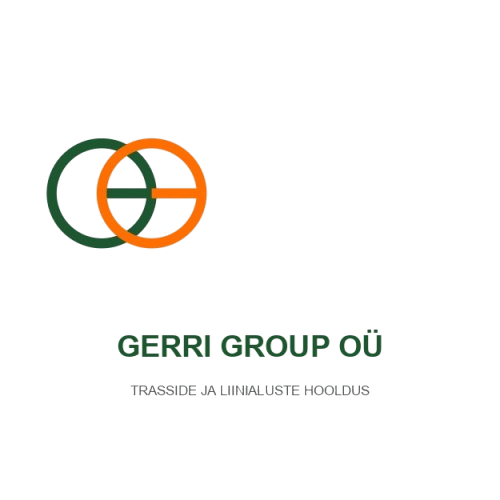

Teostame elektriliinide alust võsa- ja puuderaiet, valmistame ette metsateid ning teeme suuremahulisi niitmis- ja freesimistöid peamiselt Lõuna-Eestis.
Küsi hinnapakkumistGerriGroup OÜ on usaldusväärne ja professionaalne maahooldusettevõte, mis tegutseb kindlalt Lõuna-Eesti piirkonnas. Meie eesmärk on pakkuda kvaliteetset ja ohutut teenust maastiku-, liini- ja metsaalade korrashoiul.
Erinevalt paljudest suurematest ettevõtetest, mis keskenduvad vaid mastaapsetele projektidele, **väärtustame meie igat klienti ja võtame hea meelega vastu ka väiksemaid töid**. Meie teenused on taskukohased, pakkumised mõistliku hinnaga ning kohaliku ettevõttena tunneme Lõuna-Eesti maastikku ja olusid unepealt.
⏱️ Lubadus kliendile: Esitatud hinnapäringutele ja pakkumistele vastame alati kiiresti – hiljemalt 3 tööpäeva jooksul.
Meie jaoks ei ole ükski töö liiga väike. Võtame ette nii eraisikute väiksemaid hooldustöid kui ka suuremier trassipuhastusi.
Asume ja tegutseme Lõuna-Eestis. Oleme alati lähedal, tunneme kohalikke olusid ning meiega on lihtne suhelda.
Pakume kvaliteetset teenust ilma liigsete lisakuludeta. Meie hinnapakkumised on läbipaistvad ja turu parimate hulgast.
Elektriliinide ja trasside puhastus, et võsa ja puud ei kasvaks üle pea.
Sihtide ja metsateede rajamise eelne puhastus ning hooldustööd.
Suuremahulised hooldustööd ja võsa freesimine spetsiaaltehnikaga Lõuna-Eestis.
Registrikood: 12345678
Tegevuspiirkond: Lõuna-Eesti
Ettevõtte juht: Gerri Raudsepp
Telefon: +372 5690 3455
E-mail: info@gerrigroup.ee